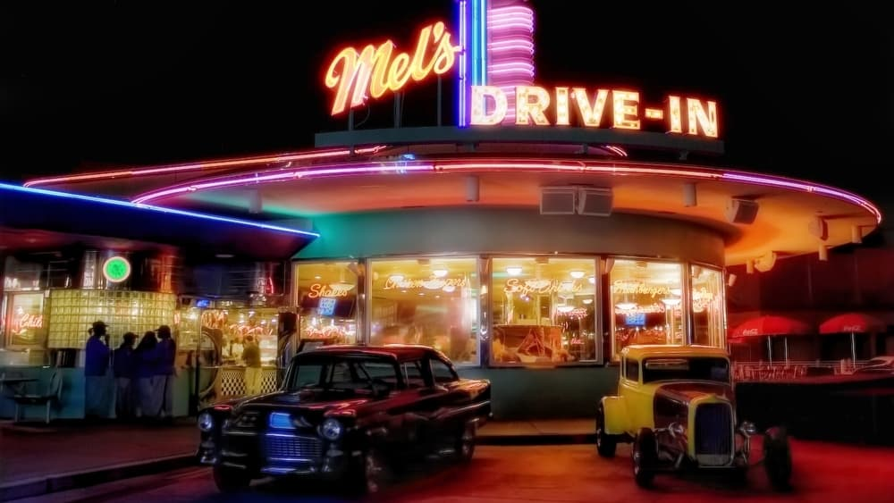

-
50 years later, 'American Graffiti' is as radical as any other New Hollywood classic
by Mitchel Green - August 3, 2023
|
mitchelgreen34@gmail.com

source: The Movie Database
As much blame as George Lucas takes for helping kill the late 1960s and 1970s New Hollywood movement with the release of “Star Wars,” he’s as much a quintessential New Hollywood filmmaker as any of his Movie Brat contemporaries. Even after studio greed swallowed him whole and forced him into making nothing but “Star Wars” films until he sold the property, Lucas was obsessed with pushing the medium forward through his pop art canvases. Even his prequel trilogy — heavily flawed though it may be — is a big creative swing with respect to its innovative use of digital technology — both in terms of digital cinematography and computer-generated effects. Lucas’s early, small-budget efforts are no different. From the start of his career, it was clear that Lucas, like his good friend Steven Spielberg, would be defined by his combination of technical ambition and populist artistic instincts.
Teenage coming-of-age dramas are not typically the kinds of films in which one might find revolutionary technical craft — or anything other than boring, competent filmmaking. And yet Lucas didn’t let a more mainstream, commercial project stop him from trying to push boundaries. Though shot in a fairly conventional classical Hollywood style, “American Graffiti” has some of the most creative and awe-inspiring uses of sound from that era.
Of course, the soundtrack first catches the ear — a collection of some of the greatest pop hits of the late 50s and early 60s, perhaps the greatest film soundtrack of all time. But it’s the way Lucas uses Walter Murch’s sound design to incorporate pop songs into the world of the film that stands out among similar types of movies. The soundtrack is almost entirely diegetic, with songs originating from a radio show hosted by Wolfman Jack and blaring out of the car stereos of the various teenagers the film follows.
The sound design makes the film more grounded — a refreshing change of pace, even compared to teen movies today. More often than not, coming-of-age films are wrapped in artifice, a necessary choice to make their melodrama halfway plausible, but it also keeps these movies from feeling truthful. The bad versions of these types of films are dramatizations of what being a teenager should be rather than what it actually is like. They’re as much fantasy as “Star Wars” is. In “American Graffiti,” the world feels lived in. Far-off radios create lonely echoes in empty town streets. Revving engines are a mode of communication. What you listen to says as much about you as anything you say or do. “Don’t you think the Beach Boys are boss?”
More than its formal invention, “American Graffiti”’s melancholic tone place it firmly in the New Hollywood pantheon. The film isn’t just a joyous nostalgia-fest, it is subtly exposing the scumminess of the adult world. Teachers hit on young students, men are sexually aggressive, and women talk frankly about this violence. Even the “Where Are They Now?” text that accompanies the film’s final scene is bleak — two characters are dead, one is living in Canada implied to be a draft dodger, and one is working a dead-end insurance salesman job in his hometown. It’s not a stretch to say the night portrayed in the film is the last time all the characters’ lives were happy and easy. And yet, they still find themselves hopelessly lost in an uncertain world.
The film’s narrative structure reflects this aimlessness, bouncing between disjointed moments in these characters’ nights but not building to anything. There are arcs, but no propulsive force drives the characters toward their conclusions. The film isn’t built on energy, it’s built on rhythm — on characters not knowing what they want and just taking each moment as it comes. That rejection of plot still feels fresh, especially compared to everything Lucas has done since — as great as “Star Wars” is, its standard hero’s journey storytelling is the least interesting thing about it.
Almost 50 years of doing nothing but “Star Wars” and inadvertently creating the risk-averse Hollywood landscape of today may tarnish George Lucas’s reputation beyond repair for some people. But it can’t be forgotten what a radical filmmaker he once was — and one could argue always was, though one can only be so radical in the studio system. “American Grafitti” may be a portrait of its characters’ last moments of innocence before adulthood and the turmoil of the 1960s would consume them, but it’s also the last glimpse of Lucas’s artistic innocence before the film business and franchise management consumed him. It’s a fun movie that remains deeply sad and troubled at its core. What’s more New Hollywood than that?